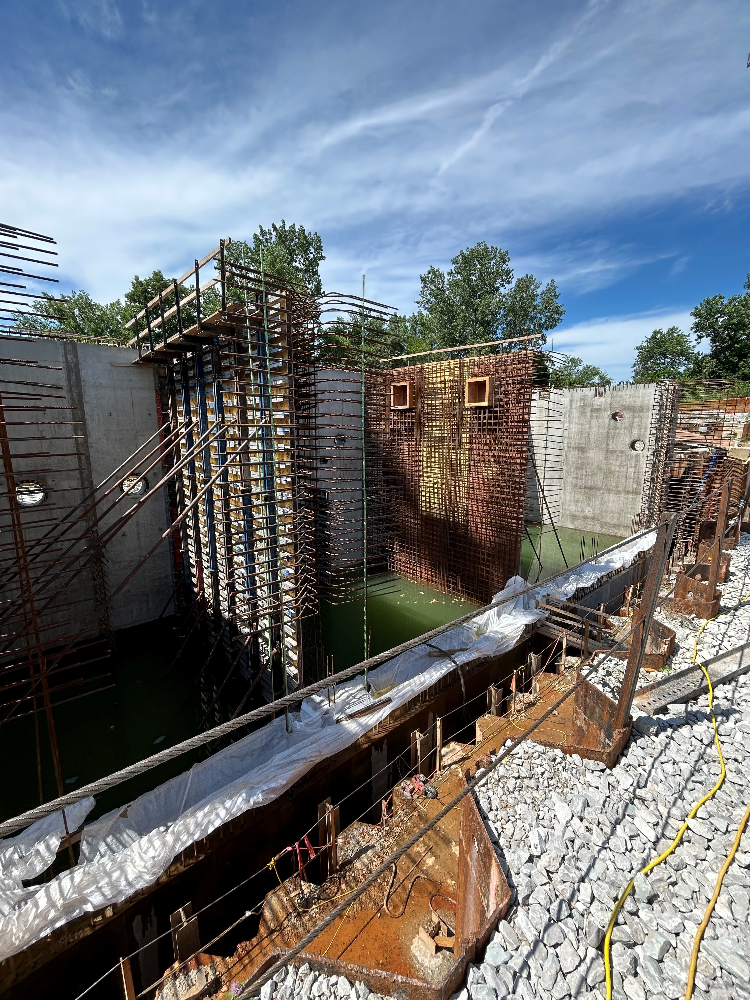
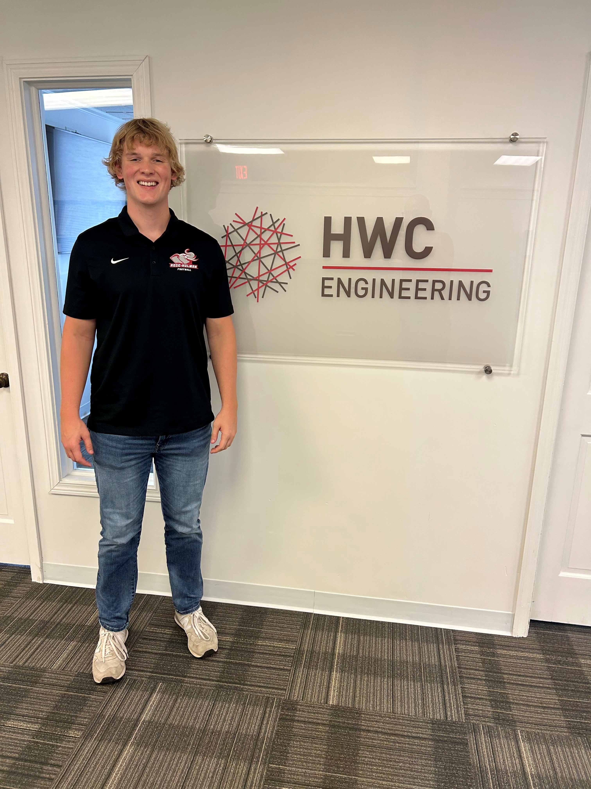

HWC Engineering · Summer 2025
Water Resource Internship
Stormwater modeling, permit applications, and site work on municipal infrastructure projects in Terre Haute and Indianapolis.
I'm a Civil Engineering student at Rose-Hulman from Casey, Illinois. Last summer I worked at HWC Engineering doing stormwater design and field work on municipal projects. This summer I'll be a Field Engineer Intern at MasTec working on wind energy infrastructure.
I'm studying Civil Engineering at Rose-Hulman and I'm interested in water resources, site development, and sustainable infrastructure. I like being involved in both the design side and what's actually happening out in the field.
At HWC Engineering I got to work on real municipal projects — running stormwater models in HydroCAD, sitting in on client meetings, helping put together permit applications, and spending time on job sites. This summer at MasTec I'll shift more toward the construction side, doing field engineering on large-scale wind energy projects.
B.S. Civil Engineering · Terre Haute, IN · Expected May 2028
Played football while carrying a full engineering course load at Rose-Hulman.
American Society of Civil Engineers — professional development and industry networking.
Rush Chair & New Member Education Chair

Stormwater modeling, permit applications, and site work on municipal infrastructure projects in Terre Haute and Indianapolis.

Sat in on client meetings and helped work through early-stage stormwater drainage and runoff design.

Visited the job site during a municipal lift station project. Watched concrete placement and worked with the crew to make sure things lined up with the plans.
Balanced a full engineering workload with competitive football — a lot of early mornings and learning how to manage time under pressure.
Led recruitment and ran onboarding for new members. Planned events and helped people get integrated into the house.
Attended professional development events and met engineers working in the field. Good way to stay connected to the industry outside of class.
Open to conversations about internships, projects, or anything civil engineering. Feel free to reach out.